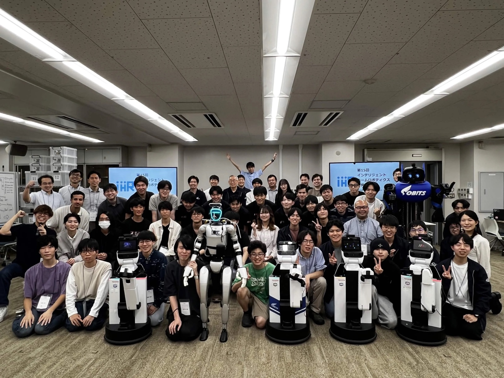
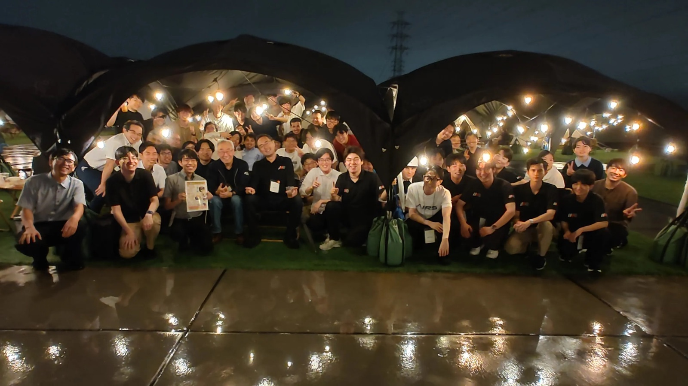

第15回インテリジェントホーム
ロボティクス研究会を共催しました
CIRoS Co-hosts the 15th Workshop on
Intelligent Home Robotics
日本ロボット学会インテリジェントホームロボティクス研究専門委員会 主催／創価大学にて開催
Organized by the RSJ Technical Committee on Intelligent Home Robotics, held at Soka University
研究会とロボット競技会を創価大学で2日間開催
Two days of workshop and robot competition at Soka University
2026年9月19日（土）・20日（日）、創価大学において、日本ロボット学会インテリジェントホームロボティクス研究専門委員会が主催する「第15回インテリジェントホームロボティクス研究会」が開催され、CIRoS（創価大学理工学部 知能ロボティクス・センシング共創研究センター）が共催機関として本研究会を支えました。併催として「第5回インテリジェントホームロボティクスチャレンジ」も実施されました。
On September 19–20, 2026, the 15th Workshop on Intelligent Home Robotics, organized by the Technical Committee on Intelligent Home Robotics of the Robotics Society of Japan, was held at Soka University with CIRoS (Research Center for Co-creation in Intelligent Robotics and Sensing, Faculty of Science and Engineering, Soka University) serving as a co-host. The 5th Intelligent Home Robotics Challenge was held alongside the workshop.
インテリジェントホームロボティクス研究会とは
About the Workshop
インテリジェントホームロボティクス研究会は、日本ロボット学会のインテリジェントホームロボティクス研究専門委員会が運営する研究会で、生活支援ロボットや家庭内で動作する知能ロボットに関する研究発表と議論の場を提供しています。ロボットの実機を持ち込んだ競技会を併催することが特徴で、研究発表と実機検証の双方から分野の発展を促しています。
The Workshop on Intelligent Home Robotics, run by the Technical Committee on Intelligent Home Robotics of the Robotics Society of Japan, provides a forum for presentations and discussion on assistive robots and intelligent robots that operate in domestic environments. A distinctive feature of the workshop is the co-located competition, in which teams bring their physical robots, advancing the field through both research presentations and hands-on validation.
当日の様子
Highlights
会場には全国から研究者・学生が集まり、複数の生活支援ロボットが持ち込まれました。研究発表に加えてポスターセッションが行われ、触覚デバイスやマルチモーダルな人物概念モデルなど、ハードウェアからソフトウェアまで幅広いテーマにわたる議論が交わされました。併催の第5回インテリジェントホームロボティクスチャレンジでは、各チームが実機ロボットで家庭内タスクの遂行に挑みました。
Researchers and students from across Japan gathered at the venue, bringing a number of assistive robots with them. In addition to the oral presentations, a poster session covered a broad range of topics from hardware to software — including tactile devices and multimodal person-concept models. In the co-located 5th Intelligent Home Robotics Challenge, teams took on domestic tasks with their physical robots.


表彰結果
Award Results
併催の競技会およびポスターセッションにおいて、CIRoS関係者が以下の賞を受賞しました。
CIRoS-affiliated teams and members received the following awards in the co-located competition and the poster session.
準優勝Runner-up
チーム名：SOBITS
メンバー：色摩健太朗、増田創太、市橋晴人、米満莉子、吉橋正樹、小田秀一、椎葉義寿、中根正幸、LEE JUNHO、塚田太郎（創価大学）
Team: SOBITS
Members: 色摩健太朗, 増田創太, 市橋晴人, 米満莉子, 吉橋正樹, 小田秀一, 椎葉義寿, 中根正幸, LEE JUNHO, 塚田太郎 (Soka University)
i-Line HOPS：繰返し接触動作に耐え得るロボットハンド用触覚デバイスの開発i-Line HOPS: Development of a Tactile Device for Robot Hands Durable against Repeated Contact Motions
発表者：花嶋優作，山崎大志，崔龍雲，金英福
Authors: 花嶋優作, 山崎大志, 崔龍雲, 金英福
マルチモーダル人物概念モデルを用いた変動観測条件下における人物識別の評価Evaluation of Person Identification under Varying Observation Conditions Using a Multimodal Person-Concept Model
発表者：沖谷瑞保，萩原良信
Authors: 沖谷瑞保, 萩原良信
おわりに
Looking Ahead
CIRoSは「産学・地域・学生との共創」を拠点活動の核に据えています。今回のような学会研究会の共催を通じて、国内の研究コミュニティと連携しながら、知能ロボティクスとセンシングの研究基盤を広げてまいります。ご参加いただいた皆さま、運営に当たられた日本ロボット学会インテリジェントホームロボティクス研究専門委員会の皆さまに心より御礼申し上げます。
Co-creation with industry, the local community, and students is at the heart of CIRoS. Through co-hosting academic workshops such as this one, we will continue to expand the research foundation for intelligent robotics and sensing in collaboration with the domestic research community. We sincerely thank all participants and the RSJ Technical Committee on Intelligent Home Robotics for making this event possible.